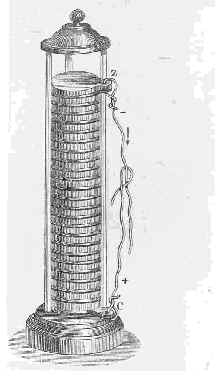
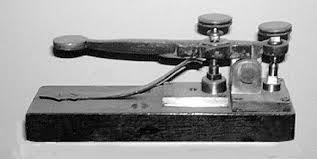

|
How Did the Invention of Batteries Affect Technology?

Batteries: A Technological Leap
- First battery invented in 1800
- Invented be Alessandro Volta
- First battery was made by stacking copper and zinc plates
on top of each other then using saltwater to complete a circut.
- This creates a steady stream of electricity
- This makes up one cell
- Many more batteries were invented within the given timeframe
- These include the Daniell Cell, the Porous Pot Cell,
and at the very end of the time period the lead-acid Battery
- The lead-acid battery was the very first rechargeable battery
- The battery was revolutionary as it gave us a controlled way to handle small
amounts of electricity which lead to many amazing inventions.
|
Most Influential Inventions Made Possible by Batteries
- The Arc Lamp

- First electrical lighting
- Invented by Sir Humphry Davy
- First powered by 2000 cell battery
- First demonstrated in 1802
- Light is created by an electrical current that
runs through air between electrodes
- Later became popular as streetlamps in the 1870s
- The Telegraph

- Crude electric telegraph made in 1809 by Samuel Soemmering
- First highly funtional telegraph invented by Harrison Dyar in 1828
- Sends morse code in the form of electrical currents
- Facilitated comunication in many aspects of life such as politics and journalism
|
{kind=link}